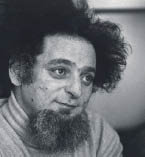

(1936 – 1982)

Fransız edebiyatının çılgın adamı George Perec'in kırk yıl önce yazdıklarıyla ne demek istediği bugün hem kendi ükesinde hem de dünyada daha yeni anlaşılmaya başlanıyor. Edebiyatı bilinen kalıplar dışına çıkaran, "bu kadarı da olmaz" denilecek konularda kitaplar yazan ve ünlü "Kayboluş" romanını hiç "e" harfi kullanmadan yazan bu yazarı hâlâ okumadıysanız hemen okumalısınız.
George Perec (okunuşu: Jorj Perek), 7 Mart 1936'da Paris'te doğdu. Annesi Cyrila Peretz ve babası İcek Judko idi ve George, Yahudi çiftin tek çocuğuydu. Perec'in babası 1940 yılında II. Dünya Savaşı'nda öldürüldü ve annesi aynı savaşta ortadan kayboldu. Yazarın annesinin toplama kamplarından birinde öldüğü sanılmaktadır. Perec anne-babasının ölümünden sonra (1945), halası tarafından resmen evlat edinildi.
Yazar Sorbonne Üniversitesi'nde tarih ve toplumbilim okurken bir yandan da La Nouvelle Revue Française ve Les Lettres Nouvelles gibi saygın dergilerde yazılar yayımlıyordu. 1959 yılında paraşütçü asker olarak görev yaptığı ordudan terhis olan yazar, aynı yıl Paulette Petras ile evlendi. Sonraki bir yılı Paulette'in öğretmenlik yaptığı Tunus'ta geçirdiler.
1961 yılında bir hastanede arşivci olarak işe başlayan Perec, 1978 yılına kadar bu düşük maaşlı işte çalışmak zorunda kaldı. 1967 yılında edebiyata yeni kapılar açmak amacıyla kurulan "potansiyel edebiyat atölyesi" Oulipo'ya katılan yazar, burada şair Raymond Quenau gibi edebiyatçılarla tanıştı ve arkadaş oldu.
Arşivdeki işinden maddi-manevi tatmin olmayan Perec, bir yandan da radyo oyunları yazmaktan film çekmeye, Le Point dergisi için çapraz bulmaca hazırlamaya kadar bulduğu her işte çalışıyordu. 1965 yılında çıkan ilk romanı Şeyler: Altmışların Bir Hikayesi adlı romanı yazara Renaudot Ödülü'nü kazandırsa da Perec'in ilk yazarlık başarısı 1969'da yazdığı Kayboluş adlı roman oldu. 300 sayfa boyunca tek bir "e" harfi kullanılmadan yazılan bir "lipogram" olan Kayboluş'un, adı "e" harfiyle dolu olan yazarın kendi kayboluşu üzerinden, annesinin ve giderek de Yahudi toplumunun ortadan kaybolma serüvenini simgelediği düşünülmektedir.
1975 yılında yayımlanan W ya da Bir Çocukluk Hatırası diğer romanları gibi karmaşık bir yapıya sahip olmasına rağmen yarı-otobiyografik nitelikte bir romandır. 1978'de yayımlanan Yaşam Kullanma Kılavuzu; hayali bir Paris apartmanında geçen ve iç içe geçmiş öykülerden, fikirlerden, kinayelerden oluşan okunması son derece zor, ama bir o kadar da keyifli bir romandır. Medicis Ödülü'nü kazanan bu romanıyla ilk kez maddi ve manevi bir rahata ulaşan yazar, 1981 yılını Queensland Üniversitesi'nde konuk sanatçı olarak geçirmişti ve orada da ölümüyle yarım kalan romanı 53 Gün üzerinde çalıştı. Ülkesine döndükten sonra sağlığı bozulan sanatçı, 3 Mart 1982 günü fazla sigaradan kaynaklandığı düşünülen akciğer kanserinden öldüğünde henüz 46 yaşındaydı.
Seçme Romanları: Şeyler: Altmışların Bir Hikayesi (1965), Uyuyan Adam (1967), Kayboluş (1969), W ya da Bir Çocukluk Hatırası (1975), Yaşam Kullanma Kılavuzu (1978), Kış Yolculuğu (1993)